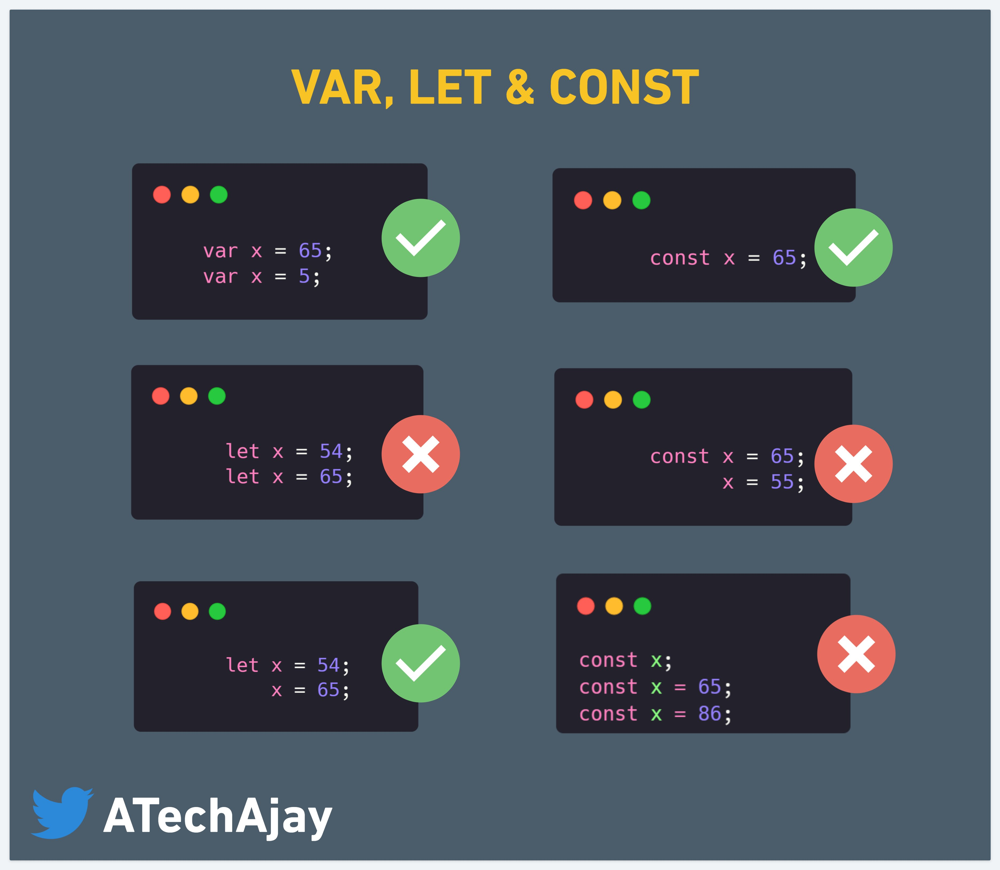

2. ¿Cuáles son las diferencias entre const, let y
var?
Lo
primero hemos de detenernos en que son las
variables
Tipos de variables en
JavaScript
- Número (Number): Almacena valores
numéricos, ya sean enteros o decimales.
- Cadena (String): Contiene secuencias de
caracteres, como texto.
- Booleano (Boolean): Representa valores
verdaderos (true) o falsos (false).
- Nulo (Null): Indica que una variable no
tiene valor o está vacía.
- Indefinido (Undefined): Cuando una
variable se ha declarado pero no se le ha asignado un valor.
- Arreglo (Array): Almacena una lista
ordenada de elementos.
- Objeto (Object): Estructura de datos que
puede contener propiedades y métodos.
- Función (Function): Un bloque de código
reutilizable que puede ser llamado.
- Símbolo (Symbol): Identificador único
utilizado para propiedades de objetos.
- BigInt: Para manejar números enteros
grandes.
Declaración
y asignación de variables en JavaScript
var nombre
De esta manera, existirá un espacio en memoria que haga referencia a
la variable nombre, pero por defecto tendrá un valor undefined.
Para guardar un valor en esa variable, se utiliza el
símbolo de igual ( = ) , seguido del valor. Esto se
denomina asignación.
var nombre
nombre = "JavaScript"
Se puede declarar y asignar en una misma línea, sin repetir el nombre
de la variable. A esto se le dice inicializar una variable.
var nombre = "JavaScript"
Cómo acceder a una variable
Una vez que hayas declarado y asignado un valor a una variable, ya
puedes emplear en tu código usando su nombre, sin la necesidad de
escribir nuevamente var.
var nombre = "JavaScript"
console.log(nombre) //"JavaScript"

play ▶
🎯 En JavaScript, puede crear 3 tipos de variables:
usando declaraciones const, lety var. Cada tipo de variable tiene un
comportamiento diferente con respecto a los pasos de declaración,
inicialización, acceso al valor y asignación.
Para abordar este tema, vamos a ver conceptos como
scope y hoisting, para poder entender
las diferencias entre las 3 formas que tenemos de declarar una
variable.

Scope
El scope de una variable hace referencia a su
alcance, es decir, en que lugar estan éstas disponibles
para su uso. Puede ser "global" o "local".
Scope Global ->
Decimos que el scope es global, cuando una variable
es declarada fuera de una función y podemos
acceder a ella desde cualquier parte
del archivo.
En el ejemplo siguiente podemos ver que tenemos declarada una
variable "nombre" por fuera de la función "saludar()", a la
cual le asignamos el valor "Clark Kent", pero si se fijan, podemos
acceder a su valor e imprimirlo en consola tanto desde dentro, como
desde fuera de "saludar()".
var nombre = "Clark Kent";
function saludar(){
var saludo = "Hello " + nombre;
console.log(saludo);
}
saludar(); // "Hello Clark Kent"
console.log(nombre); // "Clark Kent"
Scope Local ->
Mientras que nos referimos al scope local cuando se
trata de una variable declarada dentro de una función,
por lo que NO tenemos acceso a ella
desde fuera.
A diferencia del ejemplo anterior, en éste declaramos la variable
"saludo" dentro de la funcion "saludar()" e intentamos acceder
a su valor e imprimirlo en consola desde fuera, pero conseguimos un
error que nos dice que "saludo" no esta definido. Ésto se debe a que el
scope de "saludo" es local y solo se puede acceder a su
valor desde dentro de la función en la que fue decalarada.
var nombre = "Clark Kent";
function saludar(){
var saludo = "Hello " + nombre;
console.log(saludo);
}
saludar(); // "Hello Clark Kent"
console.log(saludo); // ReferenceError: saludo is not defined
Ahora, imaginen que nuestro archivo tiene mil lineas de codigo y
tenemos nuestras variables declaradas de manera global con "var". Ésto
puede resultar en un problema, ya que podemos perder el control de las
mismas y podriamos reasignarles un valor sin querer, obteniendo
resultados no deseados. Veamos un ejemplo...
var nombre = "Clark Kent";
function saludar(){
nombre = "Bruce Wayne";
var saludo = "Hello " + nombre;
console.log(saludo);
}
saludar(); // "Hello Bruce Wayne"
console.log(nombre); // "Bruce Wayne"
Como pudimos ver, nuestra variable global "nombre" que inicialmente
tenia el valor de "Clark Kent", fue modificada dentro de la
funcion "saludar()" reasignandole el valor "Bruce Wayne".
El ejemplo anterior nos lleva a otro punto importante, y es que a las
declaraciones "var" se les puede reasignar otro valor e incluso se las
puede redeclarar.
Cuando una variable es redeclarada y se le asigna un valor diferente
al original, podriamos acceder al nuevo valor, siempre y cuando lo
hagamos dentro del mismo scope en el que se redeclaró. Veamos...
var nombre = "Clark Kent";
function saludar(){
var nombre = "Bruce Wayne";
var saludo = "Hello " + nombre;
console.log(saludo);
}
saludar(); // "Hello Bruce Wayne"
console.log(nombre); // "Clark Kent"S
Observemos que la variable "nombre" se declara en el scope global y
se le asigna el valor "Clark Kent", pero dentro de la función
"saludar()" la volvemos a declarar y le asignamos un valor diferente, en
este caso "Bruce Wayne", sin embargo cuando invocamos la funcion y a su
vez queremos imprimir en consola la variable "nombre" podemos ver que
los valores son diferentes aunque la variable parezca la misma. Esto se
debe a que declaramos dos veces una variable pero en diferentes
scopes.
Pero ojo con esto, porq si hacemos lo mismo pero dentro de un
condicional como el "if" el resultado es otro y podria complicarnos la
vida. Miren el siguiente caso
var nombre = "Clark Kent";
if(true){
var nombre = "Bruce Wayne";
}
console.log(nombre); // "Bruce Wayne"
Al redeclarar la variable dentro del "if" y cambiarle su valor, este
tambien cambia de manera global, por eso cuando recuperamos la variable
fuera del condicional y la imprimimos en consola obtenemos el nuevo
valor.
Hoisting
El hoisting es una característica de JavaScript que
permite que las declaraciones de variables y funciones sean elevadas al
comienzo del bloque de código en el que se encuentran.
Esto significa que, aunque una variable o función pueda estar
declarada en un lugar posterior en el código, será tratada como si
estuviera al principio del bloque.
Esto se podria ver tambien como si javascript moviera las
declaraciones a la parte superior del scope, y las inicializara como
"undefined", para luego asignarle el valor que definimos, en la linea en
donde lo definimos. El siguiente ejemplo funciona tal como esperamos que
lo haga, declaramos la funcion nombre y le asignamos un valor el cual
podriamos imprimir luego por consola.
var nombre = "Clark Kent";
console.log("Hello " + nombre); // "Hello Clark Kent"
Sin embargo si primero invocaramos el console.log() y luego
declararamos la variable, el resultado seria "Hello
undefined"
console.log("Hello " + nombre); // "Hello undefined"
var nombre = "Clark Kent";
¿Pero por que funciona asi? Justamente porque javascript llevaria la
declaración de la variable al inicio del scope asignandole por defecto
el valor "undefined", luego invocaria el console.log() y recien ahi
reasignaria a la variable "nombre" el valor que nosotros indicamos.
Veamos con un ejemplo como funcionaria en el detras de escena...
var nombre = undefined;
console.log("Hello " + nombre); // "Hello undefined"
nombre = "Clark Kent";
Ahora que hemos hablado de los conceptos Scope y Hoisting y conocemos
su comportamiento vamos a ver que ocurre con Let y
Const
Scope de "let"
Las variables declaradas con "let" funcionan un poco
diferente a las declaradas con "var", y es por esto que se recomienda
usar esta nomenclatura que nos ofrece "ES6" como una buena práctica.
Esto es porque "let" tiene un scope de bloque.
Basicamente un bloque es todo lo que se encuentra
entre llaves "{ }", entonces si tomamos como ejemplo el
mismo que usamos para "var", en donde declarabamos otra vez la misma
variable dentro de un "if" y sobreescribiamos su valor, vamos a
encontrarnos con que el funcionamiento cambia un poco y nos salva de
cometer errores accidentales. Veamos...
let nombre = "Clark Kent";
if(true){
let nombre = "Bruce Wayne";
}
console.log(nombre); // "Clark Kent"
Como podemos ver en el código de arriba, tenemos 2 variables "nombre"
pero en diferentes scopes ya que para "let" un bloque
es considerado un scope local aunque no se trate de una
función como tal.
Si intentaramos declarar 2 veces la misma variable con "let"
en el mismo scope obtendriamos un "SyntaxError: Identifier
'nombre' has already been declared"
let nombre = "Bruce Wayne";
let nombre = "Clark Kent"; // SyntaxError: Identifier 'nombre' has already been declared
Sin embargo, si que podriamos declarar una variable con "let" y mas
adelante reasignarle otro valor, siempre y cuando se trate del mismo
scope.
let nombre = "Bruce Wayne";
nombre = "Clark Kent";
console.log(nombre); // "Clark Kent"
Hoisting de "let"
Como sucede con "var", para "let" javascript funciona de la misma
manera, asigna en memoria las declaraciones previamente a su
ejecución, o dicho de otra forma, eleva las declaraciones de
las variables o funciones a la parte superior del scope en donde se
encuentren. Pero existe una diferencia, y es que al contrario de lo que
sucede con "var", javascript no inicializa por defecto
las variables con "undefined", por lo tanto si hicieramos
referencia a una variable todavia no inicializada
obtendriamos un error.
console.log("Hello " + nombre); // ReferenceError: Cannot access 'nombre' before initialization
let nombre = "Clark Kent";
Scope de "const"
Con las variables declaradas con "const" pasa algo
similar que con "let", son variables que tiene scope de
bloque, pero la diferencia está en que a éstas NO se
les puede reasignar el valor. Tienen valores
"constantes". Si intentaramos reasignarle el valor a una
variable declarada con "const" obtendriamos un error.
const nombre = "Clark Kent";
nombre = "Bruce Wayne"; // TypeError: Assignment to constant variable.
Hoisting de "const"
Al Igual que con "let" las variables declaradas con "const" son
asignadas en memoria antes de la ejecución y tampoco son inicializadas.
Por lo tanto obtendriamos el mismo error, si quisieramos acceder a su
valor previo a inicializaras.
console.log("Hello " + nombre); // ReferenceError: Cannot access 'nombre' before initialization
const nombre = "Clark Kent";
Resumen
-
“var”” es la manera más antigua de declarar variables. No
es muy estricta en cuanto al alcance, ya que al declarar variables de
esta forma, dichas variables podrán ser accedidas, e incluso
modificadas, tanto dentro como fuera de los bloques internos en una
función.
-
Con ““let”” por otra parte, el alcance se reduce al
bloque (las llaves) en el cual la variable fue declarada. Fuera de este
bloque la variable no existe. Una vez declarada la variable con let, no
se puede volver a declarar con en ninguna otra parte de la
función.
-
““const”” al igual que ““let”” se define en el contexto o
alcance de un bloque, a diferencia de let y var, las variables definidas
como constantes (const), ya no podrán ser modificadas ni declaradas
nuevamente, en ninguna otra parte de la función o el contexto en el que
ya existen.
-
La recomendación es reducir siempre al mínimo el alcance
de nuestras variables, por lo que se debe usar let en lugar de var
mientras sea posible.
-
Ejercicio 1
Declarar una variable var ("Hola"), let ("Mundo") y const ("!")
e imprimir su valor.
-
Ejercicio 2
Modificar el valor de las variables. Muestra el
valor.
-
Ejercicio 3
Demostrar el hoisting con var , let y const.
-
Ejercicio 4
Demostrar el alcance de una variable en una función. Declara una
variable var let y const y muestra el valor.
-
Ejercicio 5
Declara una variable let y una const dentro de una función y
muestra el valor. Observa el resultado.
-
Ejercicio 6
como solucionariamos los errores del ejercio anterior. Aceptas
el reto 😜